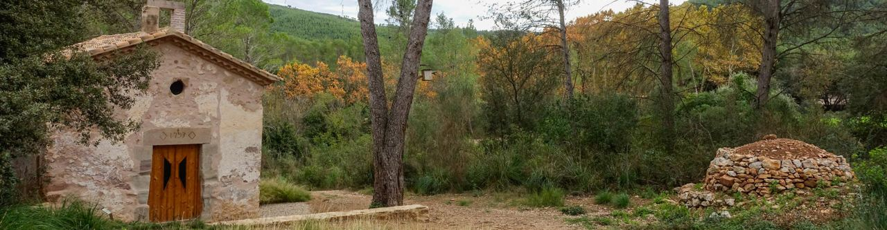

Ruta · Vallirana
Us proposem un tomb familiar on descobrirem elements d'elevat valor patrimonial del poble de Vallirana. Per gaudir plenament del contingut divulgatiu de la ruta trobareu faristols amb textos molt…